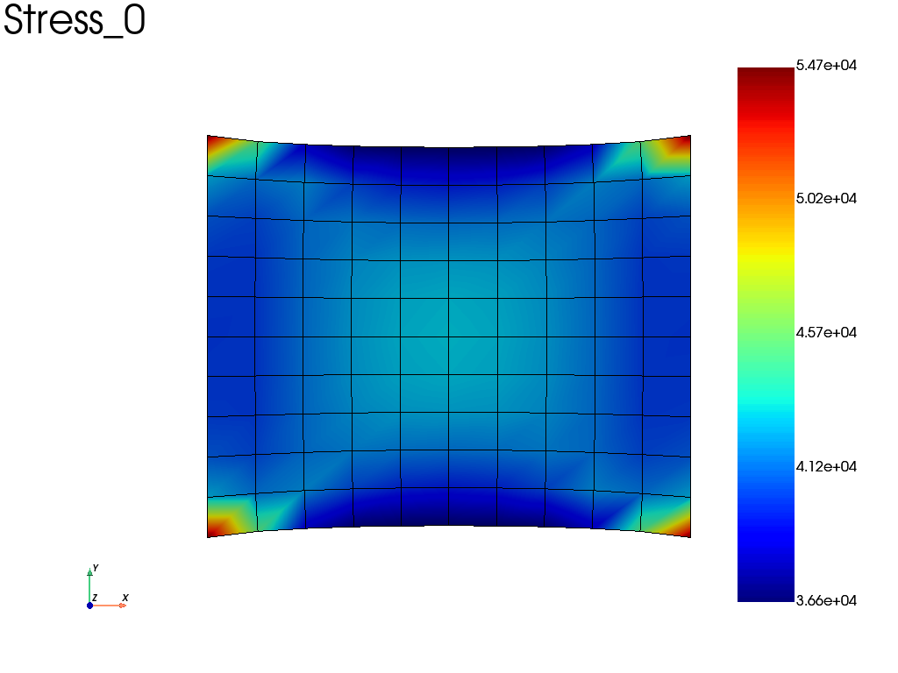
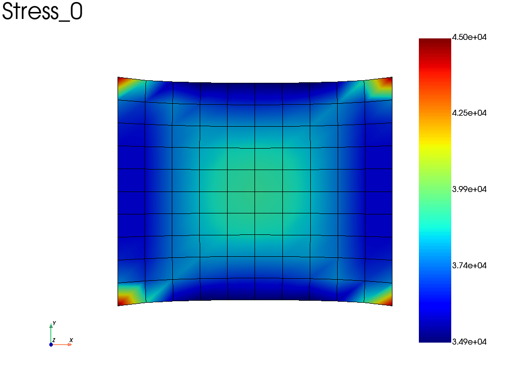
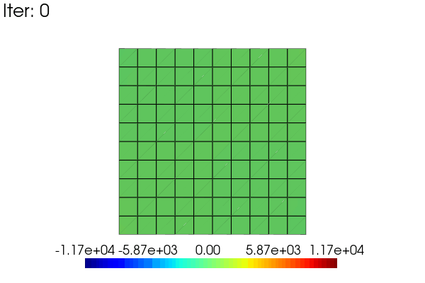
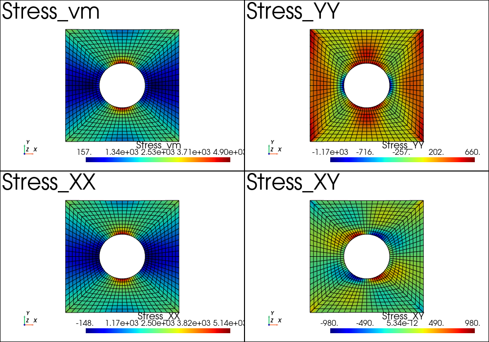

Post-Processing
Get results from a problem
In fedoo, most of the standard results are easily exportable using the
fedoo.Problem.get_results() method of the problem class.
The get_results method returns a fedoo.DataSet object which comes
with several methods for plotting, saving and loading mesh-dependent results.
A dataset can be associated with either a fedoo.Mesh or a
fedoo.MultiMesh.
To avoid a redundent call of the get_results function, especially for time
dependent problems, one can simply add some required output with the
fedoo.Problem.add_output() method. This create a
MultiFrameDataSet object associated to the problem.
Once the required outputs are defined for a given problem, a call to the
fedoo.Problem.save_results() method allow to save all the defined
fields on disk using the choosen file format, and associate the saved file to
an iteration of the MultiFrameDataSet. For non linear problems
solved using fedoo.Problem.nlsolve(), results are automatically saved at
some iterations dependending on the choosen parameters.
The MultiFrameDataSet stores references to the saved iterations in
the MultiFrameDataSet.list_data attribute. The method
MultiFrameDataSet.load() is called to read the data
of a given iteration.
Class DataSet
|
Object to store, save, load and plot data associated to a mesh. |
Class MultiFrameDataSet
|
MultiMesh results
A DataSet or MultiFrameDataSet associated with a
MultiMesh can contain submeshes with different element types.
Node fields use the common global node numbering. Element and Gauss-point
fields returned by DataSet.get_data() are stored in a
MultiMeshData object, with one data block per submesh.
Global element ids use the concatenated submesh order: all elements of submesh 0, then all elements of submesh 1, and so on. For example:
stress = results.get_data("Stress", "vm", "Element")
# Access data by submesh or by global element id
shell_stress = stress.submesh("tri3")
value = stress.global_element_value(42)
values = stress.global_element_values([3, 18, 42])
# Build one NumPy array using the global element order
global_stress = stress.to_global()
Normal NumPy-style access to a MultiMeshData object refers to its
active submesh. Use MultiMeshData.to_global() when a globally ordered
array is required. A global selection spanning several submeshes can be
plotted directly:
results.plot(
"Stress",
component="vm",
data_type="Element",
element_set=[3, 18, 42],
global_element_set=True,
)
|
Array-like data container associated with a |
Beam and shell section fields
Requesting only Stress with position=None is sufficient for min/max and
signed extrema over the saved section points. Generalized BeamStress and
ShellStress are not required for these stored reductions. Mixed meshes retain
ordinary continuum stress fields alongside recovered beam/shell fields, including
von Mises and principal components.
These are extrema over the saved sampling, not guaranteed continuous section extrema. Restricting the saved output to one point restricts stored reductions to that point. Refining elastic beam sampling later requires the generalized resultants. Homogeneous linear shell tensors at two distinct thickness points determine their linear distribution and allow later resampling without saved resultants; nonlinear/laminate shell files already retain the underlying thickness stresses for interpolation.
Shell constitutive laws already recover Stress and Strain through
get_results and add_output. For shells, position is the normalized
through-thickness coordinate: -1 is the bottom face, 0 the midsurface, and 1
the top face. A scalar selects one point; a one-dimensional array selects
several points. position=None saves all shell.output_points. Homogeneous
linear shells default to three equally spaced points (bottom, middle, top),
controlled by n_points. Nonlinear shells default to their actual thickness
integration points. Linear laminates save both sides of every layer interface.
Shell tensors have shape (6, n_thickness_points, n_shell_gauss_points).
Their coordinates and layer identities are stored as native FDH5 metadata.
ShellLocalFrame is included automatically for shell outputs and enables
global tensor components. Stored nodal tensors cannot be rotated unambiguously;
use element/Gauss-point tensors or recompute before converting to nodes.
Use res.shell_options to select the source and thickness value:
res = pb.add_output("shell_results", shell_assembly,
["ShellStress", "ShellStrain", "Stress", "Strain"])
res.shell_options.update(reduction=None, position=0.25)
stress = res.get_data("Stress", "XX")
res.shell_options.update(reduction=None, point_index=0)
res.shell_options.update(source="recomputed", reduction="abs_max", samples=11)
von_mises = res.get_data("Stress_global", "vm")
The default source is "auto": prefer stored tensors, otherwise recover or
interpolate. "stored" and "recomputed" explicitly require that source.
The default "abs_max" reduction selects the largest absolute component
value, retaining its sign; "max" and "min" are also supported. Invariants
and principal values are evaluated at each point before reduction. A reduction
ignores point selection; without a reduction, give position or
point_index, not both. Updating either selector clears the other.
Only homogeneous linear shell stresses can be recovered from ShellStress
and the thickness/shear factor. Transverse shear uses the existing constant
distribution, Q/(k*h). ShellStrain recovers the Reissner–Mindlin strain
kinematics for all supported shell laws, including the existing zero normal
strain component.
If the respective generalized field is absent, two distinct saved thickness
points reconstruct the homogeneous linear stress distribution or linear strain
kinematics. The linear reconstruction can also evaluate positions beyond the
saved thickness interval, within [-1,1]. One saved point is insufficient.
Stored nodal tensors remain unsuitable for global rotation, including when
resampling their linear distribution.
Nonlinear shells and laminates save private _ShellStress tensors at their
actual material points whenever Stress or ShellStress is requested.
Linear laminates instead save the exact stress limits at both faces of each
layer. This permits later piecewise linear interpolation independently within
each layer, preserving stress jumps. Interpolation also works for stored tensors
with multiple thickness points. At positions outside the layer’s integration
points, the nearest value is retained, matching existing distribution plots;
this is an approximation at the faces. One thickness integration point gives
a constant approximation within that layer. A coordinate exactly on an interface
selects the lower layer; point indices can select either saved side.
samples sets the generated point count per layer for recomputed reductions
and index selection. Actual integration points are also retained to capture
extrema. Stored sampling is fixed, so samples is ignored for that source.
The viewer’s Options → Shell… dialog combines normalized position, point
index and extrema in Value, with Coordinate system at the end. A shell
submesh selector lists only compatible submeshes. Stored/Recomputed is required
on the reference submesh and is a preference, with fallback, on other submeshes.
A reference point index supplies its normalized position to other submeshes;
on the reference it retains the exact index, including either side of a laminate
interface. Stored coordinates in the viewer use the nearest point within the
requested layer. The API keeps interpolation as the default stored selection;
stored_position="nearest" or "exact" selects other policies. Source
fallback is opt-in through source_fallback=True and reference_submesh.
The dialog respects Apply options to.
Beam and shell viewer components default to global coordinates when the local
frame is available; otherwise the viewer uses local coordinates. Section tensors
remain stored locally and the results API retains its existing local defaults.
Beam BeamStress and BeamStrain fields are generalized quantities in
the local element frame, not continuum tensors. Their component orders are:
BeamStress: N, QY, QZ, MX, MY, MZ
BeamStrain: epsX, gammaY, gammaZ, kappaX, kappaY, kappaZ
Beam sections also recover continuum Stress and Strain at normalized
(y, z) coordinates. Scalar beam positions are rejected. Pass one pair or
an array with shape (n_section_points, 2). position=None (the default)
extracts every configured section output point:
section = fd.constitutivelaw.BeamRectangular(
material, a=2, b=4, output_points=[[-1, 0], [0, 0], [1, 0]]
)
res = pb.add_output(
"beam_results", beam_assembly,
["BeamStress", "BeamStrain", "BeamLocalFrame", "Stress", "Strain"],
position=None,
)
Raw stored beam tensors have shape
(6, n_section_points, n_beam_gauss_points). Section points remain a separate
axis from beam integration points. Their normalized coordinates are saved with
the field, including per-Gauss-point coordinates when a pipe’s radius ratio
varies. Node and Element output retain the section-point axis.
The continuum fields obtained this way are expressed in the local beam
frame. BeamLocalFrame stores nine components at each Gauss point, in
row-major order; each row of its 3-by-3 matrix is a local basis vector expressed
in global coordinates. It follows the current element frame during a nonlinear
solve. Keep this output at Gauss points for later tensor recovery: averaging
frames at nodes shared by differently oriented beams loses the section axes.
Stored nodal tensors therefore support local extraction but reject global
rotation. Stored element tensors support local extraction and global rotation
when the Gauss-point frames agree within each element. Otherwise use stored
Gauss-point tensors, or recompute and rotate before nodal/element averaging.
Post-processing saved generalized fields requires the section properties used in the analysis, but does not require the original problem or assembly:
from fedoo.util import BeamStressList, BeamStrainList
# Load a frame first if results is a MultiFrameDataSet.
force = BeamStressList(results["BeamStress"])
stress = force.get_stress(section, position=(y, z))
strain = BeamStrainList(results["BeamStrain"]).get_strain(
section, position=(y, z)
)
stress_global = force.get_stress(
section, position=(y, z), local_frame=results["BeamLocalFrame"]
)
results.gausspoint_data["Stress"] = stress_global.asarray()
# The standard viewer can now display XX, YY, XY, vm, etc.
Recovery assumes isotropic linear elasticity and a centroidal section with
principal y/z axes. The local axial stress is
N/A + z*MY/Iyy - y*MZ/Izz. Transverse shear uses parabolic Jourawski
approximations for rectangles and solid disks, with peak factors 3/2 and 4/3
relative to Q/A. The disk expression is a chord-average approximation,
not the complete two-dimensional elasticity distribution. Pipes and generic
sections retain the section-average Q/A approximation.
Circular, pipe and rectangular sections include Saint-Venant torsion. The
rectangle uses 128 odd Fourier harmonics for both stress and strain recovery,
with a consistent series-based torsion constant replacing the previous
polynomial approximation. This describes free warping, not restrained-warping
axial stresses. Nonzero torsion in other section shapes raises
NotImplementedError because a torsion constant
alone does not specify the pointwise stress distribution. Recovered strain
is recovered directly from BeamStrain using beam kinematics, without
E, G or Poisson’s ratio. Its axial component is
epsX + z*kappaY - y*kappaZ. Engineering shear uses the generalized
gammaY and gammaZ without multiplying by the shear correction factor.
Circular and pipe sections add -z*kappaX to gammaXY and
y*kappaX to gammaXZ; other sections require a warping model for
nonzero twist. epsYY, epsZZ and gammaYZ are zero under these beam
kinematics. No isotropic Poisson contraction is inferred. These kinematic
strains are distinct from a full three-dimensional constitutive strain recovery.
The dataset and viewer share the predefined field/component dictionary
fedoo.util.field_components.FIELD_COMPONENTS. Beam components therefore
have physical labels rather than numerical indices, and named extraction such
as results["BeamStress", "MY"] uses the same labels. Unknown user fields
retain numerical component labels.
Automatic recovery from FDH5 beam results
Gauss-point outputs of BeamStress or BeamStrain automatically
include section metadata shared by both fields, associated with their submesh.
FDH5 writes typed HDF5 datasets under
results/iter_N/section_metadata/submesh_I instead of JSON. Uniform properties
are scalars in this group; varying properties are private _Section_* fields
with an explicit Node, Element or GaussPoint association. Metadata references
these fields. Definitions are preserved per frame and per submesh.
A reloaded file therefore needs no live solver
or constitutive-law object to display section tensors:
res = pb.add_output(
"beam_results", beam_assembly,
["BeamStress", "BeamStrain", "BeamLocalFrame"],
)
# Later, after reading the FDH5 file and loading the desired frame:
local_vm = results["Stress_local", "vm"]
global_xx = results["Stress_global", "XX"]
local_strain = results["Strain_local", "XX"]
fd.viewer(results)
Native recovery follows BeamStress → Stress and BeamStrain →
Strain. Neither path needs elastic constants in the saved section
description. Older descriptions containing isotropic constants are still read,
but these constants do not influence kinematic strain recovery.
Stress, Stress_local and Stress_global share one selection policy
(likewise for strain). Global components require BeamLocalFrame. The viewer
shows one Stress and one Strain entry. Options → Beam… selects the source,
coordinate system, section position/index and reduction. Its optional Beam
toolbar is hidden by default.
For mixed meshes, Beam options lists compatible beam submeshes as sampling references. Choosing an index resolves its normalized coordinates on that reference section; the same coordinate request applies to every beam submesh. The preview highlights the nearest stored point when stored data is selected. The viewer requires Stored/Recomputed on the selected reference submesh. On other beam submeshes it uses that source when available and falls back to the other source otherwise. Stored fallback uses the nearest normalized point; recomputed fallback evaluates the requested normalized coordinates. These preferences remain active when changing result frames.
results.beam_options.update(...) validates updates atomically:
source="auto"(default) prefers stored tensors when available, otherwise recomputes from the respective generalized field. Explicit"stored"or"recomputed"raises an error if the required data is unavailable. The viewer enablessource_fallback=Truefor mixed meshes and setsreference_submeshto its sampling reference. The reference remains strict; other submeshes use the preferred source when available, otherwise the other source. API selections remain strict by default (source_fallback=False).reduction="abs_max"(default) returns the value with the largest absolute magnitude, retaining its sign. Equal-magnitude ties select the first output point."max"and"min"use algebraic extrema.reduction=Noneselects one point using normalizedposition=(y,z)or zero-basedpoint_index. Supplying both non-None in one update is rejected. Selecting either clears the other. A reduction ignores both selectors.stored_position="nearest"(default) chooses the closest saved point in normalized (y,z), independently on each submesh and at each saved beam location. Equal-distance ties choose the first point. This selects a saved value without interpolation.stored_position="exact"requires a matching point at every location. Recomputed positions can be any coordinates supported by the recovery model, including coordinates beyond the bounding box.Section metadata declares
recovery="linear"(the default for existing sections and legacy files) or"stored_only". Setsection.recoveryor override it in a section subclass.stored_onlydisables recovery from generalized fields even when those fields are saved; stored tensors remain available for point selection and reductions.sampleschanges generated recomputed sampling only. Stored points and explicitly supplied output points remain fixed.
For example:
results.beam_options.update(source="stored", reduction=None, point_index=2)
stress_at_point = results["Stress", "XX"]
results.beam_options.update(position=(0.4, -0.2), stored_position="nearest")
stress_at_nearest_saved_point = results["Stress", "XX"]
results.beam_options.update(source="recomputed", position=(0.5, -0.25))
stress_at_position = results["Stress", "XX"]
results.beam_options.update(reduction="abs_max", samples=128)
signed_extreme = results["Stress", "XX"]
maximum_vm = results["Stress", "vm"]
Zero is the section origin; -1 and +1 select the respective negative and
positive bounding faces. Asymmetric sections have separate scales on each
side. Bounds describe the geometry, not merely the extent of output points.
Generic sections without supplied bounds use (-1,1,-1,1), giving identity
mapping and thus physical coordinates. Bounding-box coordinates need not lie
in the material, for example inside a pipe hole.
Section reductions evaluate the requested scalar (including invariants) at each point before selecting an extremum, and before nodal/element averaging. An envelope therefore requires a scalar component; component extrema must not be combined into a synthetic tensor. Extrema are sampled estimates.
Standard sections generate output points using n_points=32 by default,
an approximate total point budget including boundaries and interiors. Pipes
exclude the hole. Increasing samples refines recomputed grids. A custom
section’s fixed point set is not resampled. In the viewer, Sample points number
snaps to the closest supported count when editing finishes; fixed point counts
are displayed without allowing edits. For equal distances, the lower count wins.
An unsampled custom
section without supplied points or a sampling method requires a direct
position with reduction=None; the viewer disables indices and reductions.
Recomputation still requires the recovery model for the requested stresses.
Section classes own storage and geometry
BeamProperties.section_description() defines the portable section schema.
Subclasses declare a unique section_type and their section_dimensions;
they are registered automatically. Implement sample_points(n_points=32),
scale_section_points(points) and optionally section_mesh(n_points=32)
to extend recovery without adding shape-specific code to FDH5 or the viewer.
The section class must be imported when recovering its saved results.
section_mesh wraps existing mesh generators and accepts their optional
arguments. It returns a reference mesh in the centroid-relative local section
plane. n_points is an approximate total point budget for sampling and
meshing; their discretizations need not be identical. Rectangles sample mesh
nodes; circles and pipes retain analytical polar sampling.
Generic BeamProperties accepts optional section_points or
section_mesh and section_scale=(scale_y, scale_z). Optional output_points are normalized pairs; n_points controls generated
output sampling. Supply true section_bounds=(ymin,ymax,zmin,zmax) for custom
geometry; bounds are never inferred from output points. Supplied section-mesh coordinates
must already be centred on the area centroid and aligned with principal axes.
Points are scaled about that origin, not the bounding-box centre. Only output
points and reference bounds are saved for custom meshes, not their connectivity.
Section stiffness properties must still be provided explicitly; a supplied
mesh does not compute a warping solution or enable noncircular torsion recovery.
Variable dimensions/properties default to GaussPoint storage after conversion
by the assembly. To retain another association, set, for example,
section.section_property_associations = {"r": "Element", "A": "Element",
"Jx": "Element", "Iyy": "Element", "Izz": "Element"} before output.
Recovery converts these arrays to the saved beam Gauss-point locations.
Node-associated section arrays with element-subset output are currently rejected.
The viewer hides underscore-prefixed fields by default. Options → Show
internal fields exposes them. add_output(..., private=True) prefixes
requested mesh fields with _. Options → Beam… → Section geometry and
sampling… displays section points and properties at a selected longitudinal
location. Select Section point index to evaluate Stress/Strain at a normalized
output point scaled separately at each beam location. In Python, use
results.beam_options.update(reduction=None, point_index=0, samples=32);
updating position clears the previous index automatically.
Older JSON-based section descriptions remain readable.
Beam options respect Options → Apply options to. For All windows, each beam pane evaluates the settings using its own section definition. Non-beam panes are unaffected. If an index or coordinate-system choice is unsupported in a target pane, no panes are changed and the viewer identifies the incompatible pane. Use Active window to configure different sections independently.
In sample-index mode, the local y/z boxes display read-only physical coordinates at the selected longitudinal Gauss point of the active submesh. Changing that location updates the coordinates for varying sections; it does not restrict the plotted field to that location. The index still follows the section mapping throughout the mesh. The section preview highlights the selected sample.
Older FDH5 files cannot infer section geometry from resultants alone. If the original section properties are available, attach them to a single-mesh dataset before viewing or resaving:
results.set_beam_section(section)
Nonuniform properties must follow the saved Gauss-point order. Files without these descriptions continue to expose their original generalized fields. Automatic recovery requires unaveraged Gauss-point generalized fields and frames; requesting their output at nodes does not preserve this information.
Save data to disk
Once a DataSet is created using for instance the
fedoo.Problem.get_results() method, the data can easily be saved on
disk using for instance the fedoo.DataSet.save() method.
FDH5 is the default and recommended format. If DataSet.save,
MultiFrameDataSet.save_all, or read_data is called with a filename
without an extension, the .fdh5 extension is assumed.
- The available file types are:
‘fdh5’: The native HDF5-based Fedoo format. It stores the mesh, node and element sets, node/element/Gauss-point fields, and multiple iterations in one file. It also preserves the complete MultiMesh structure and its per-submesh fields. This is the default format.
‘fdz’: A legacy zipped archive containing the mesh using the ‘vtk’ format named ‘_mesh_.vtk’, and data from several iterations named ‘iter_x.npz’ where x is the iteration number (x=0 for the 1st iteration).
‘vtk’: The vtk format contains the mesh and the data in a single files. The gauss points data are not included in the file. This format is efficient for a linear problem when we need only one time iteration. In case of multiple saved iterations, a directory is created and one vtk file is saved per iteration. The mesh is included in every file which is not memory efficient.
‘msh’: Format associated to gmsh. Have the same drawback as the vtk format for time depend results and missing gauss points data. The vtk format should be prefered.
‘npz’: Save data in a numpy file npz which doesn’t include the mesh. The mesh is generally saved beside in a raw vtk files without results.
‘npz_compressed’: Same as npz with a compression of the zip archive.
‘csv’: Save DataSet that contains only one type of data (ie Node, Element or Gauss point data) in a csv file (needs the library pandas installed). The mesh is not included and may be saved beside in a vtk file.
‘xlsx’: Same as csv but with the excel format.
Read data from disk
To read data saved on disk, use the function read_data().
The data are imported as DataSet or
MultiFrameDataSet objects depending on the imported file(s).
FDH5 is used by default when the filename has no extension.
Example
For example, defining and solving a very simple problem :
import fedoo as fd
fd.ModelingSpace("2Dstress")
mesh = fd.mesh.rectangle_mesh()
material = fd.constitutivelaw.ElasticIsotrop(2e5, 0.3)
wf = fd.weakform.StressEquilibrium(material)
assembly = fd.Assembly.create(wf, mesh)
# Define a new static problem
pb = fd.problem.Linear(assembly)
# Boundary conditions
pb.bc.add('Dirichlet', 'left', 'Disp', 0 )
pb.bc.add('Dirichlet', 'right', 'Disp', [0.2,0] )
# Solve problem
pb.solve()
Then, we can catch the Stress, Displacement and Strain fields using:
results = pb.get_results(assembly, ["Stress", "Disp", "Strain"])
# plot the sigma_xx averaged at nodes
results.plot("Stress", component='XX', data_type='Node')

Alternatively, if we take the same problem, but accounting for geometric non linearities (nlgeom = True), we can automatically save results at specified time interval (here the results are saved on a file).
wf.nlgeom = True
pb_nl = fd.problem.NonLinear(assembly)
# Boundary conditions
pb_nl.bc = pb.bc
results_nl = pb_nl.add_output('nl_results', assembly, ["Stress", "Disp", "Strain"])
pb_nl.nlsolve(dt = 0.1, tmax = 1, interval_output = 0.2)
# plot the sigma_xx averaged at nodes at the last increment
results_nl.plot("Stress", component='XX', data_type='Node')

Fedoo interactive viewer
Fedoo includes a graphical application to visulize a result file or a DataSet like object. To be able to launch the viewer, the package pyvistaqt has to be installed.
Then the viewer can either be launched as a standalone application from command line:
$ python -m fedoo.viewer
or from a python code. The code below show different ways to start the viewer inside a python code:
import fedoo as fd
result = fd.read_data('myfile.fdh5') # load a DataSet from file
fd.viewer() # start the viewer with no file opened
fd.viewer(result) # start the viewer and open the result DataSet
fd.viewer('myfile.fdh5') # start the viewer with the data from a file
The viewer includes the following tools and features:
Management of multiple independent windows, which can be linked together.
Field and iteration selectors for data exploration.
A wide range of plotting options.
Show or hide elements from predefined sets, rectangular selections, or arbitrary expressions.
Plot results along an interactively defined line.
Plot time-history data, when applicable.
Clip the current mesh using an interactively defined plane.
Save figures and create movies using the current visualization settings.
Basic operations
The principale methods/functions to extract, plot and manage result data are listed in this section.
Extract data
|
Retrieve data from the DataSet for a given field. |
|
Retrieve history data from the MultiFrameDataSet. |
Plotting results
A few convenient methods are proposed to generate images or movies from
DataSet and MultiFrameDataSet objects.
|
Plot a field on the surface of the associated mesh. |
|
Plot a field on the surface of the associated mesh. |
|
Plot history data from the MultiFrameDataSet. |
|
Create a video from the data. |
Save results
|
Save data to a file. |
|
Write a npz file using the numpy savez function. |
|
Write a compressed npz file using the numpy savez_compressed function. |
|
Save the mesh using a vtk file. |
|
Write data in a csv file. |
|
Write data in a xlsx file (excel format). |
|
Write vtk file with the mesh and associated data. |
|
Write a msh (gmsh format) file with mesh and associated data. |
|
Write the dataset to a FDH5 file. |
|
Save all data from MultiFrameDataSet. |
Read results
|
Read a file from disk. |
|
Read a file from disk. |
|
Load data from a data object. |
|
Load data from a data object. |
Advanced operations
Write Movies
A very simple way to write a movie from a MultiFrameDataSet is
to call the embedded method MultiFrameDataSet.write_movie().
Though this method comes with lots of options, one may sometimes want to fully control the movie rendering. This is easy to do by manualy writing the movie using the pyvista library.
Here is an exemple to animate the linear results obtained in the problem defined above. The idea is to use a scale_factor applied to the displacement (using the scale argument) and to the stress field (modifiying the results data).
import pyvista as pv
results = pb.get_results(assembly, ['Stress', 'Disp'], 'Node')
stress = results.node_data['Stress']
clim = [stress[3].min(), stress[3].max()] # 3 -> xy in voigt notation
pl = pv.Plotter(window_size = [600,400])
pl.open_gif("my_movie.gif", fps=20)
sargs = dict(height=0.10, position_x=0.2, position_y=0.05)
for i in range(48):
scale_factor = (i + 1) / 48
results.node_data["Stress"] = scale_factor * stress
results.plot(
"Stress",
"XY",
plotter=pl,
scale=scale_factor,
clim=clim,
title=f"Iter: {i}",
title_size = 10,
scalar_bar_args=sargs,
)
pl.hide_axes()
pl.write_frame()
pl.close()

Multiplot feature
It is possible to create the plotter before calling the plot function. This allow for instance to use the pyvista multiplot capability. For instance, we can plot the stress results after the example example_plate_with_hole:
import pyvista as pv
pl = pv.Plotter(shape=(2,2))
# or using the backgroundplotter:
# from pyvistaqt import BackgroundPlotter
# pl = BackgroundPlotter(shape = (2,2))
results.plot('Stress', 'vm', 'Node', plotter=pl)
pl.subplot(1,0)
results.plot('Stress', 'XX', 'Node', plotter=pl)
pl.subplot(0,1)
results.plot('Stress', 'YY', 'Node', plotter=pl)
pl.subplot(1,1)
results.plot('Stress', 'XY', 'Node', plotter=pl)
pl.show()
